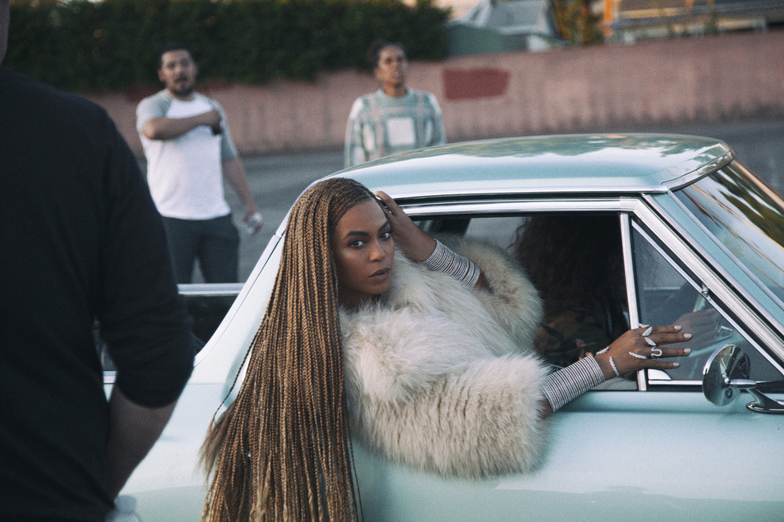

MUS 302 · What to Listen for in Music
Module 2: African American Foundational Traditions · Listening Guide · Track 5 of 5
Track 5 Beyoncé, "Formation" (2016)

Context
Beyoncé before "Formation": Houston, Destiny's Child, and a family map of the Black South
Beyoncé Giselle Knowles was born in Houston, Texas, on September 4, 1981. By the time she released "Formation" she had been famous for almost two decades. She had been the lead singer of Destiny's Child, one of the best-selling girl groups in pop history, from her teens through her early twenties; she had built a solo career in the 2000s on records like Dangerously in Love (2003) and I Am... Sasha Fierce (2008); she had married the rapper Jay-Z in 2008; she had become a mother in 2012; and she had been quietly consolidating a position as one of the most-listened-to and most-watched popular artists on earth. What is striking about "Formation," in 2016, is that it is the first time she had used that platform to make a record this explicitly about being Black, Southern, and a woman, in that order, and to frame all three as political identities.
The family geography that opens the song is real. Her mother, (born Célestine Beyoncé in Galveston, Texas, in 1954), came from a family of people whose roots run deep through the bayou parishes around New Iberia and Abbeville. Tina's parents grew up Catholic, in French-speaking communities, and traced their ancestry in part to exiles displaced from Canada to Louisiana in the eighteenth century. Beyoncé's father, Mathew Knowles, was born in Gadsden, Alabama. The opening lines of "Formation" name both: "My daddy Alabama, mama Louisiana / you mix that negro with that Creole, make a Texas bama." The song is, among other things, a map of how a Black Southern family moved through three states in three generations and made a child who would become an international pop star, who in 2016 wanted you to know that none of the moving had taken the country out of her.
The political moment: Black Lives Matter, the Movement for Black Lives, and 2016
"Formation" landed in February 2016, in the middle of what the historian would call a Black political moment without modern precedent. had been killed in 2012 and his killer acquitted in 2013. The hashtag was first used in response to that acquittal. The killing of Michael Brown by Ferguson, Missouri police in August 2014 had launched the largest sustained wave of street protest the United States had seen since the late 1960s. Eric Garner had been killed by NYPD in July 2014. had died in a Texas jail cell in July 2015. By the time Beyoncé released "Formation," the Movement for Black Lives had become the central political fact of Black American life, and the question of whether mainstream Black celebrities would say something about it had become a question about the celebrities, not about the question.
"Formation" was also the closing track of Lemonade, the visual album Beyoncé would release two months later. Lemonade is a long film organized around a fictional crisis (a husband's infidelity, modeled loosely on the public rumors about Jay-Z) that opens out into a meditation on Black women's interior lives, on Southern memory, on water and Hurricane Katrina, on the history of Black motherhood. "Formation" is its closing argument. The framing reading made the case that James Brown's "Say It Loud" was political work in three modes at once: content, form, and presence. "Formation" works in the same three modes, with the platform of the biggest pop star on earth in 2016 amplifying each of them.
The recording: Mike Will Made-It, the bounce samples, and the question of credit
The song was produced by Beyoncé and , the producer best known at that point for Miley Cyrus's "We Can't Stop" and Rae Sremmurd's "No Type." The original came from Pluss; Swae Lee, of Rae Sremmurd, freestyled the chorus hook ("okay ladies, now let's get in formation") over Pluss's beat as a reference track. Mike Will sent that reference to Beyoncé. Beyoncé wrote new verses on top, completed the song in New York at Quad Recording Studios, and asked for -style horns to be added so the track would, as she put it, sound like something a marching band could play. The horns are what give the chorus its stomp; without them the track would sit closer to alone.
Two voices besides Beyoncé's appear on the recording, and both belong to Black New Orleanians who came up through , the New Orleans dance subgenre built on the "Triggerman" beat and the shouts that have organized Black party music in the city since the early 1990s. The opening voice ("what happened at the New Orleans? bitch, I'm back, by popular demand") is , the stage name of Anthony Barré, a queer Black bounce rapper and YouTube comedian who was murdered in New Orleans in November 2010 at the age of 22. The "I like that" later in the track is also Mya. Both lines are pulled from videos he had posted to YouTube before his death. The other voice in the track is , the queen of New Orleans bounce, who shouts "I did not come to play with you hoes / I came to slay, bitch" over the bridge. Freedia was alive and credited; she has spoken since about being part of the song.
The Mya samples raise a question worth holding. Mya's sister and sole heir, Angel Barré, sued Beyoncé and her production team for $20 million in February 2017, claiming the samples had been used without consent, that Mya had not been credited as a writer, and that his estate had not been paid royalties. Beyoncé's attorneys argued ; a federal judge in New Orleans denied the motion to dismiss in July 2017, ruling that the samples had not been "transformed" in the legal sense the way fair use requires. The case settled in February 2018 on undisclosed terms. The point, for our purposes, is not legal. It is that the song that announced Beyoncé as a Black feminist political artist is also a song whose most New Orleans-coded vocal samples come from a queer Black man whose voice was used without his estate's prior agreement, and who was murdered, in the city the song honors, in a case that has never been solved. The film critic Shantrelle Lewis wrote, in Slate, that Mya's voice in the song "would not have believed that the world's biggest pop star would use his voice in a video without acknowledging his humanity in life and in death." Track 4 raised a question about who actually performed "The Message"; Track 5 raises a parallel question about whose voices a star can speak through, and what we owe the people whose voices we use.
Reception: surprise drop, halftime show, and the argument the song started
Beyoncé surprise-released "Formation" on Saturday afternoon, February 6, 2016, with the music video rather than the song as the primary launch. The video, directed by with as camera operator, is the New Orleans-set film whose anchor images include Beyoncé on top of a sinking New Orleans police cruiser, Beyoncé and a troupe of Black women dancing in a drained municipal swimming pool, a young Black boy in a hoodie facing a line of riot cops with his hands up, and the El Camino parking-lot scene in our hero photo. The video was shot in Los Angeles, with documentary footage from Abteen Bagheri's 2014 New Orleans bounce documentary That B.E.A.T. woven in. The next day, Sunday February 7, Beyoncé performed "Formation" at the Super Bowl 50 halftime show at Levi's Stadium in Santa Clara, California, with her dancers in berets and an X-formation that referenced both the "Formation" music video and . The halftime performance landed exactly fifty years after the founding of the Black Panther Party in Oakland in October 1966.
The reception was immediate, contested, and large. The Village Voice's annual critics' poll voted "Formation" the number-one song of 2016. Rolling Stone, in 2021, named the music video the greatest of all time. The song was adopted as an anthem by Black Lives Matter and at the 2017 Women's March. The pushback was loud. Police unions across the country called for a boycott of the Formation World Tour. Conservative commentators read the video as anti-police and anti-American; the National Sheriffs' Association linked the song to subsequent killings of officers, a claim with no evidentiary basis. A more interesting critique came from Black New Orleanian writers, including the cultural anthropologist Yaba Blay in Slate, who argued that Beyoncé was using New Orleans's specific traumas (Katrina, police violence, queer Black death) as visual props for her own brand without giving the city or its people a meaningful share of the conversation. Both the celebrations and the critiques are worth holding. The song was the first major-label pop record of the streaming era to put the Black South, Black queerness, and Black Lives Matter at the center of an explicitly commercial pop track. It was also a record that did so, like every commercial record before it, through a process of selection that put some voices at the center and treated others as raw material.
Things to listen for
The recording is in F minor, in 4/4 , at a of 123 : faster than "The Message" at 101, slower than "Strange Things Happening Every Day" at 155, in roughly the same range as "Say It Loud" at 115. The audio version of the song is 3:26 long. The official music video at the YouTube link is 4:48, padded by a brief opening voiceover and a longer outro that sets up the closing image of the police cruiser sinking. The harmonic vocabulary is minimal: a short, looping bass figure and a synth pad, with punching through the bottom and the brass section punctuating the chorus.
First, the timbre of Beyoncé's voice. This is not the voice she uses on "Halo" or "Crazy in Love." Her vocal range is famously wide; here she works almost entirely in the bottom third of it. The opening lines ("y'all haters corny with that Illuminati mess") are half-whispered, in a deliberate that sits near the floor of her chest voice. The verses move into something between rapping and singing: she enunciates the consonants like a rapper would, lands hard on internal rhymes ("twirl on them haters"; "albino alligators"), and uses the deliberate flatness of trap delivery rather than the soaring she could deploy. The pop-cultural critic Lauren Chanel Allen, in Teen Vogue, read the choice as a refusal to : Beyoncé using a Houston-and-Atlanta voice on a Houston-and-Atlanta beat instead of the radio-pop voice the industry had asked her to use for fifteen years. Compare this to Bessie Smith's sitting down inside each note, or to Sister Rosetta Tharpe's sanctified soprano projecting forward. Beyoncé's "Formation" voice is doing a different thing: a controlled, low, deliberately untutored delivery that signals where she is from and refuses to pretty it up.
Second, the texture, with attention to the two-stage build. The verses are lean. A short rubbery synth bassline loops in F minor; the 808 drums punch the kick and the snare; Beyoncé speaks-sings on top with very little else around her. There is space, and the space is intentional: the texture of a contemporary trap record is more about negative space than about layering. Then, at the chorus, the marching-band horns arrive and the texture changes character entirely. A single brass-and-snare-drum stab (the figure that loops under "okay, okay, ladies, now let's get in formation") pulls the song out of trap and into New Orleans second-line territory. Two musical traditions are being stitched together inside a single track: contemporary Atlanta trap, which is the pop sound of the 2010s, and the New Orleans Black brass-band tradition, which is older than recorded music in this country. Compare this to the way "St. Louis Blues" stitched the into a , or to the way "The Message" inherited James Brown's looped and built an expanding-verse architecture on top. American popular music keeps doing this: layering one tradition on another inside the same song, making the layering itself the argument.
Third, the form. "Formation" has the structure of a contemporary pop single, with a familiar verse-prechorus-chorus shape, but it pushes its hooks unusually. The opening Messy Mya voiceover is unscored; it sits over silence and a sparse synth, not a beat, before the first verse drops in. The chorus ("okay ladies") arrives later than a 2016 pop listener might expect, and once it arrives Beyoncé loops the word "slay" over and over, varying the rhythmic placement, the way Brown looped variations on his vamp. The bridge ("I did not come to play with you hoes / I came to slay, bitch") is Big Freedia, not Beyoncé. Then the song closes with another Messy Mya sample, sealing the frame. The form is more conversational than pop usually is; it incorporates voices that are not the lead artist's, and it gives them structural weight rather than ornamental cameo weight. The lineage from "The Message" is audible. 's instinct for sampled voices, for letting a beat carry multiple speakers, has worked its way into the structure of a Beyoncé pop record.
Fourth, gesture, with attention to a single moment: the entrance of the marching-band horns at 0:55. Up to that point the track has been spare, threatening, low. The first chorus arrives and the brass stab punches in for the first time, and the song's whole emotional weight changes. A trap beat alone is private music: the texture of a person nodding to a beat in their car, headphones, a club. A brass stab is public music: the texture of a parade, a Mardi Gras Indian procession, a high-school band on a Friday night, a homecoming halftime show. By layering the second on top of the first, the song becomes something hybrid: a record that sounds like a private declaration and a public march at the same time. The lyric on top of that change ("okay ladies, now let's get in formation") is asking the listener to do exactly what the music has just done. Get in formation. Move from private to public. Walk out into the street.
Reflective question
The framing reading argued that political work in this tradition runs through content (what a song says), form (how a song is built), and presence (who is in the room and what they sound like). "Formation" does political work in all three modes, and it does so as a major-label commercial release by a Black woman whose own platform was already enormous. Pick one specific moment in the recording or video, name it precisely, and make an argument for which mode of political work that moment is doing. Then take a position on a harder question: the song uses the voices of Messy Mya and Big Freedia, two queer Black New Orleanians, to do some of its most distinctive cultural work; Mya's estate sued, and Black New Orleanian writers like Yaba Blay raised serious questions about appropriation. Does the political force of the song depend on whether those questions get a satisfying answer? Or can a song be doing political work and ethically complicated work at the same time, and if so, how should we hold both?
Sources for this section
Allen, Lauren Chanel. "Beyoncé's 'Formation' Is the Black Anthem We Needed." Teen Vogue, February 8, 2016. Source for the reading of Beyoncé's vocal delivery as a refusal to code-switch.
Blay, Yaba. "With 'Formation,' Beyoncé Exploits New Orleans' Trauma in the Name of Herself." Slate, February 10, 2016. The Black New Orleanian critique of the video as an exploitation of Katrina and police-violence imagery; required reading alongside the celebratory pieces.
Lewis, Shantrelle P. "Why Beyoncé's Use of Messy Mya in 'Formation' Was a Disservice." Slate, February 9, 2016. Source for the argument about Mya's voice being used without his humanity being acknowledged.
Mock, Janet, ed. The Lemonade Reader. Routledge, 2019. Edited collection of academic essays on the visual album, including extended treatments of "Formation."
Robinson, Zandria F. "We Slay, Part I." New South Negress, February 7, 2016. The first major celebratory reading of the song from a Black Southern feminist scholarly perspective; reposted and circulated widely.
"Formation (song)"; "Formation (music video)"; "Lemonade (album)"; "Messy Mya"; "Big Freedia"; "Tina Knowles." Wikipedia. Useful for cross-checking session details, the legal record of the Barré v. Knowles-Carter case, family-tree details, and the timeline of the surprise release and Super Bowl performance.
"Estate of Barré v. Beyoncé Knowles Carter et al." Eastern District of Louisiana, filed February 7, 2017. Settled February 5, 2018. The court record of the lawsuit over the Messy Mya samples; documented in Geo. Wash. Univ. Music Copyright Infringement Resource and reported by NOLA.com, NBC News, the Hollywood Reporter, and others.
Long, Kyle. "The Lost History of Indy Hip-Hop." NUVO, 2017. Interview with Reggie Griffin (relevant to the Sugar Hill production lineage we traced in Track 4); included here because Griffin's path from Manchild through Sugar Hill into the production world that shaped Mike Will Made-It is part of how we got from "The Message" to "Formation."
Wikidata Q22668404 ("Formation"). Source for the YouTube video duration of 288 seconds (4:48) at WDZJPJV__bQ; the audio version of the song runs 3:26.